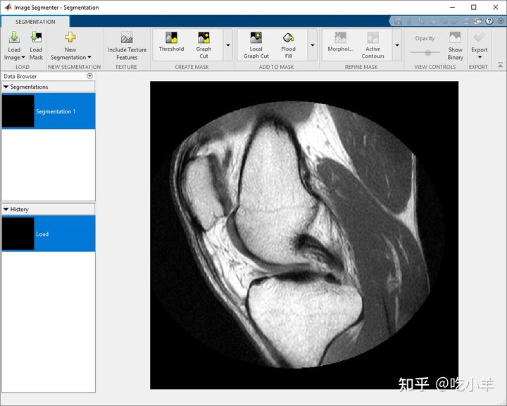
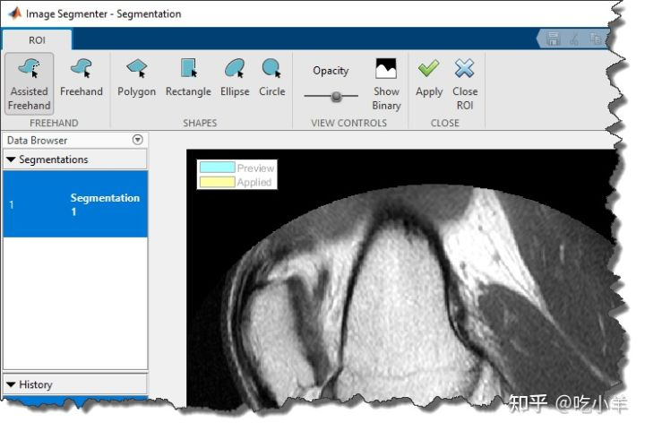
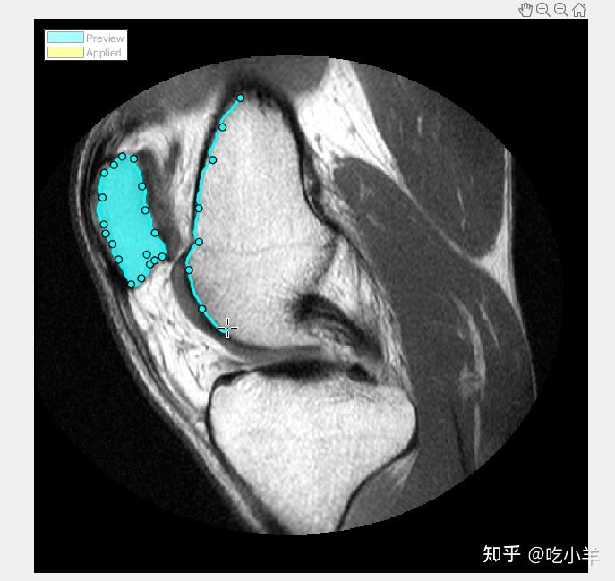
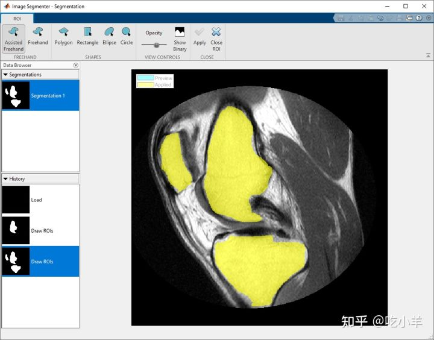
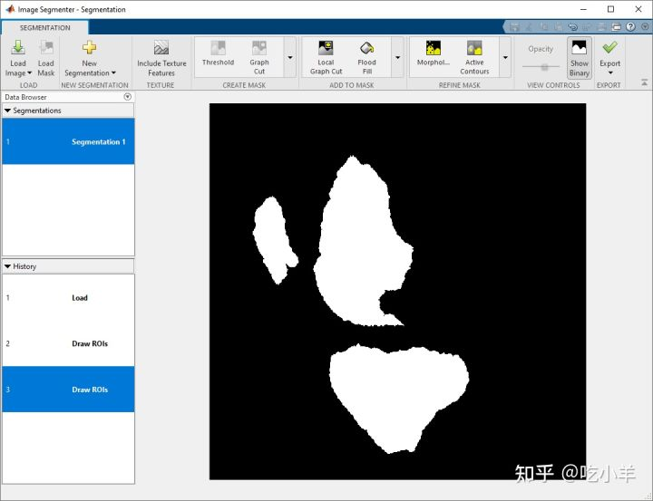

Home
本示例展示了如何通过绘制感兴趣的区域在Image Segmenter应用程序中分割图像。Image Segmenter应用程序提供了许多不同的ROI形状，包括多边形，矩形，椭圆和圆。此外，可以通过跟随图像中对象的基本形状来绘制手绘形状或直接手绘形状。
所述Image Segmenter应用程序提供了许多不同的分割方法和使用该应用程序可以是一个迭代过程。您可能会尝试多种不同的方法，直到达到您想要的结果。
在图像分割器中加载图像
打开Image Segmenter应用程序并加载要分割的图像。该应用程序可以打开任何可以由imread读取的图像。
对于此示例，将图像读入工作区。此示例使用膝盖的 MRI 图像。目标是创建一个蒙版图像，从图像中的软组织中分割骨骼。
I = dicomread('knee1');
knee = mat2gray(I);
从 MATLAB® 工具条中，打开Image Segmenter应用程序。在应用程序选项卡上的图像处理和计算机视觉部分，单击Image Segmenter图标

在应用程序工具条上，单击加载，然后选择从工作区加载图像。在从工作区导入对话框中，选择您读入工作区的图像。Image Segmenter会显示您所选择的图像。

您还可以使用以下imageSegmenter命令在 Image Segmenter 应用程序中打开图像：
imageSegmenter(knee);
将图像加载到应用程序后，您可以选择加载现有的二进制蒙版。例如，您之前可能已经在Color Thresholder应用程序中创建了 RGB 图像的蒙版，并且想要优化分割。要加载现有蒙版，请单击加载蒙版。分割蒙版图像必须是与您要分割的图像大小相同的逻辑图像。
使用 ROI 工具绘制用于分割的区域
展开 Add to Mask 组并单击Draw ROIs。该应用程序将打开 ROI 选项卡。

选择要绘制的 ROI 类型。对于本示例，选择辅助手绘。当您将光标移到图像上时，它会变为十字准线形状。按下鼠标按钮，然后开始在要分割的图像区域上绘制手绘形状。使用预选的辅助手绘 ROI 选项，您可以绘制自动跟随底层图像边缘的手绘形状，以帮助您绘制更准确的 ROI。绘制时，单击鼠标以创建航点。航点可以帮助您在完成绘图后对形状进行微调。要在完成绘制后添加其他航点，请双击 ROI 边缘 。

继续绘制形状，直到识别出要分割的所有区域。要保存您绘制的区域，请单击“应用”（它们的颜色变为黄色）。要返回 Segmentation 选项卡，请单击关闭ROI。

要查看蒙版图像，请单击“分割”选项卡上的“显示二进制”。要细化蒙版图像，请使用图像分割器应用程序工具条的细化蒙版部分中的工具，例如清除边框或填充孔。完成后，单击导出将蒙版图像保存到工作区。

======================================================================
我的测试结果及程序
下面是我测试的代码：

注：本文根据MATLAB官网内容修改而成。